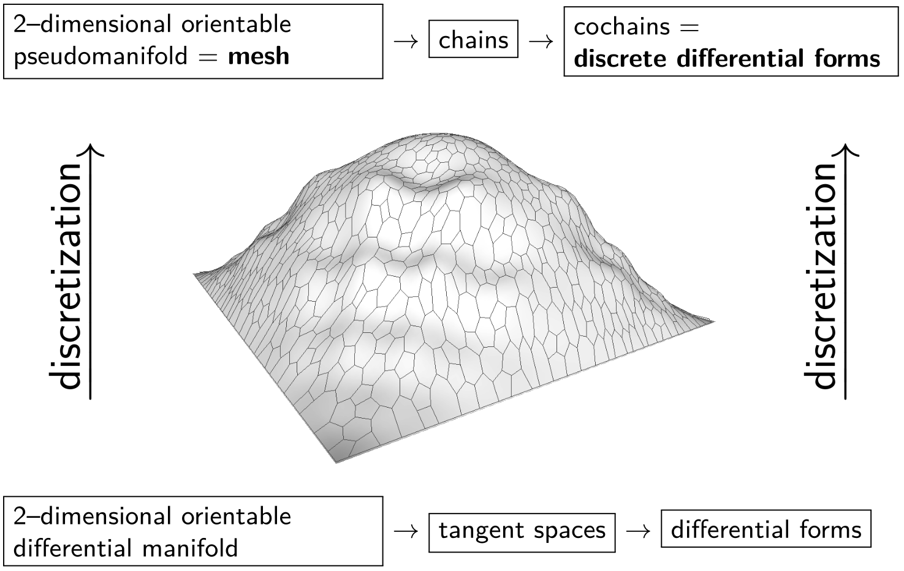

Lenka Ptáčková
|
Department of Numerical Mathematics Charles University in Prague Sokolovská 49/83, 186 75 Praha 8 https://www.mff.cuni.cz/cs/math/knm |
lenka-ptackova |
I am a postdoctoral researcher at the Department of Numerical Mathematics, Charles University in Prague.
My research focuses on discrete exterior calculus (DEC) and discrete differential geometry. I am especially interested in discrete counterparts of differential operators acting on discretized curved domains. I seek appropriate discretizations of curved domains and discretization of operators acting on them. My aim is to develop structure-preserving numerical methods and build computational frameworks that would allow for efficient geometry processing of and solving PDEs on non-flat domains. So far, I have worked mainly with general polygonal surface meshes, i.e., meshes whose faces are any simple polygons, where the mesh is a discretization of some non-flat two-dimensional surface embedded in three-dimensional Euclidean space.

News
| Apr 2026 | I am organizing Popularization of Discrete Exterior Calculus Workshop to be held at the Department of Numerical Mathematics |
| Sep 2025 | I attended the Discrete Exterior Calculus Workshop at IMSI, Chicago, USA. |
Published papers
- Ptackova, L. and Vivaldi, F. Bezier curves and the Takagi function. In Bulletin des Sciences Mathematiques, 2025.
- Hladík, M. and Ptackova, L. Absolute value equations with interval uncertainty. In Soft Computing, 2025.
- Ptackova, L. and Velho, L. A simple and complete discrete exterior calculus on general polygonal meshes. In Computer Aided Geometric Design, 2021.
- Ptackova, L. and Velho, L. A Primal-to-Primal Discretization of Exterior Calculus on Polygonal Meshes. In Eurographics Symposium on Geometry Processing, 2017.